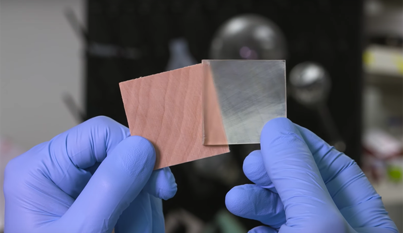

|
De la Universidad de Maryland han descubierto una nueva técnica para hacer que la madera sea transparente.
En el pasado, se intentó hacer transparente la madera mediante el uso de productos químicos especializados para eliminar la
lignina. Sin embargo, el principal inconveniente era que esto debilitaba la madera. El nuevo método utiliza una alteración
de la lignina. Al inicio del proceso, se eliminan las moléculas responsables de dar color a la madera. Luego, se aplica un
agente especial de peróxido de hidrógeno a su superficie, que luego se expone a la luz ultravioleta (o luz solar natural).
Después de estos tratamientos, la madera adquiere un color blanco. Luego, la madera se empapa en etanol para una limpieza más
profunda. Finalmente, los poros se rellenan con epoxi incoloro para que el material sea suave y casi perfectamente transparente.
Esto le da a la madera las cualidades de poder transmitir hasta el 90 %de la luz y el material es 50 veces más resistente que
el material transparente convencional. También es más ligero y, sobre todo, más resistente que el vidrio y proporciona un mejor aislamiento.
|
